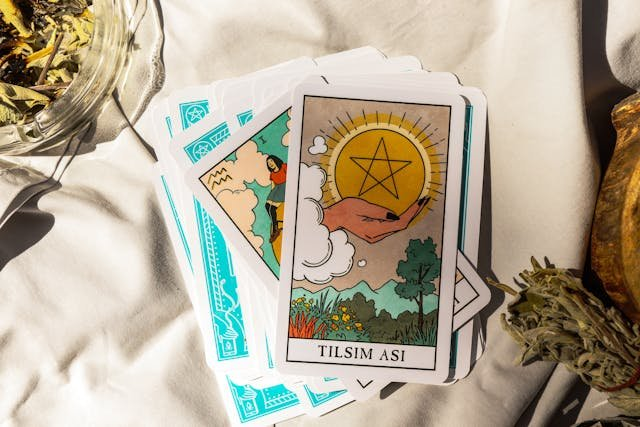

社会心理学
曖昧な言葉がなぜ「私のことだ」と感じられるのか——1948年の教室実験が暴いた、人間の認知の盲点。
心理学者バートラム・フォーラーが教室実験で「個人的妥当性の錯誤」を実証。
同年の世界：国連が世界人権宣言を採択。ベルリン封鎖が始まり冷戦が本格化。イスラエルが建国を宣言。
名前の由来：心理学者ポール・ミールが1956年に、興行師P.T.バーナムの「誰にでも少しずつ当てはまるものを用意せよ」という姿勢になぞらえて命名した。
友人から送られてきた性格診断の結果を、なんとなく開いてみたことがあるだろう。「あなたは人に好かれたいという気持ちが強い一方で、自分に厳しい面もあります」——読み進めるうちに、不思議と「当たっている」と感じる。自分の内面を見透かされたような、少しだけ心地よい感覚だ。
朝の星座占い、SNSの相性診断、雑誌の心理テスト。私たちは「あなたについて」と書かれた文章に、驚くほど簡単に「そうそう、これ私だ」とうなずく。それが友達全員にも同じように響いているとは、ふつう思わない。
この記事では、「当たっている」と感じるその瞬間に何が起きているのかを解き明かす。そして、あなた自身にもそれを体験してもらう。
「あなた専用」に見える性格描写の正体と、その錯覚がなぜ生まれるのかを知る。記事の途中で、あなた自身がその錯覚を体験する場面がある。
1940年代のロサンゼルス。心理学者のバートラム・フォーラーBertram R. Forer（1914–2000）
アメリカの心理学者。1948年の教室実験で「個人的妥当性の錯誤」を実証し、バーナム効果研究の端緒を開いた。は、ある晩ナイトクラブで奇妙な人物に出くわした。筆跡を見ただけで性格を言い当てると豪語する筆跡鑑定士筆跡鑑定（Graphology）
筆跡から性格や心理状態を読み取ると主張する分野。科学的根拠は乏しく、心理学では疑似科学に分類されることが多い。だった。フォーラーが「ロールシャッハ・テストを受けてみないか」と逆に持ちかけると、鑑定士は笑って断った。自分の技術は客が「当たっている」と認めることで証明されている、と。
フォーラーはこの遭遇を忘れなかった。「当たっている」と本人が感じることは、本当にその分析が正しい証拠になるのか？ 彼はこの疑問を、自分の教室で検証することにした。
バートラム・R・フォーラー
Bertram R. Forer, 1914–2000
カリフォルニアで活動した臨床心理学者。1948年、39人の学生に対して実施した「Diagnostic Interest Blank」テストの実験で、人間が曖昧なフィードバックを自分専用だと思い込む傾向を鮮やかに示した。彼自身はこの現象を「個人的妥当性の錯誤（fallacy of personal validation）」と呼んだ。
1948年、フォーラーは心理学入門クラスの39人の学生に性格テスト「Diagnostic Interest Blank」を受けさせた。1週間後、テスト結果に基づく「あなた個人の性格分析」を手渡す——と告げて。学生たちが受け取ったのは、丁寧にタイプされた13項目の性格描写だった。「あなたは他人に好かれ認められたいという強い欲求がある」「自分に批判的になりがちである」「まだ活かしきれていない大きな潜在能力がある」。読んだ学生たちは、0（まったく当たっていない）から5（完璧に当たっている）のスケールで、平均4.26をつけた。
ここで種明かしがある。39人が受け取った「個人の性格分析」は、全員まったく同じ文章だった。フォーラーが街の新聞スタンドで買った星座占いの本から、いくつかのフレーズを寄せ集めて作ったものだ。

占いと性格診断（イメージ）｜フォーラーが学生に渡した"個人の性格分析"は、街の新聞スタンドで買った星座占いの本から寄せ集めたものだった。
「自分なら見破れる」と思うかもしれない。だが、この実験はその後50年以上にわたり世界中の大学で繰り返され、結果はほぼ変わらない。文系も理系も関係なく、心理学の授業で認知バイアスについて学んだ直後の学生でさえ、高い的中感を報告する。知性や注意力の問題ではない。人間の認知そのものに埋め込まれた構造の話である。
"Acceptance by subject or analyst is no proof of correctness of interpretations."
「被験者や分析者が受け入れたことは、解釈が正しい証拠にはならない。」
— Bertram R. Forer, "The Fallacy of Personal Validation" (1949)
✗ よくある誤解
占いにハマりやすい人だけがバーナム効果に引っかかる
✓ 実際は
性別・年齢・学歴を問わず、ほぼ全員が影響を受ける。心理学の専門家でも例外ではない
✗ よくある誤解
バーナム効果は占いの問題であり、日常生活には関係ない
✓ 実際は
就職面接のフィードバック、性格診断アプリ、マーケティングの「あなただけの提案」など、現代生活のあらゆる場面に潜む
✗ よくある誤解
効果を知れば二度と騙されない
✓ 実際は
知識だけでは防げない。仕組みを知った心理学者が自分の星座占いに「うんうん」とうなずくことはよくある
バーナム効果の主要研究 関連する出来事
1947
スタグナーの先行実験
心理学者ロス・スタグナーが人事マネージャーに対して同様の実験を行い、50%以上が一般的なフィードバックを「正確だ」と評価した。
1948
フォーラーの教室実験
39人の学生に同一の性格描写を配布。平均4.26/5.0の的中率評価を得た。「個人的妥当性の錯誤」として発表。
1956
ミールが「バーナム効果」と命名
心理学者ポール・ミールが論文「Wanted — A Good Cookbook」で、P.T.バーナムにちなんでこの現象に名前を与えた。
1977
レイ・ハイマンがコールドリーディングを分析
占い師や霊媒師がバーナム効果を利用して「当たっている」と思わせるテクニック群を体系的に記述した。
2005
バーナム文の大規模再調査
テキサス大学エルパソ校の研究で、星座占い本から441の文を分析し、150文がバーナム文の基準を満たすことを確認。
ここから先は、フォーラーの1948年の実験を現代風にアレンジした体験だ。あなたの星座を選び、2つの質問に答えると、「あなた専用の性格分析」が表示される。読んだら、どのくらい当たっているかを5段階で評価してほしい。
大事なのは、正解を探すことではなく、自分の中で何が起きるかを観察することだ。「当たっている」と感じる瞬間があれば、その感覚をよく覚えておいてほしい。あとでその正体を一緒に見ていく。
"Self-validation is no validation."
——自分が「当たっている」と感じたことは、それが正しい証拠にはならない。
— Michael Birnbaum, カリフォルニア州立大学フラートン校心理学教授
先ほどの体験で、たとえ3や4をつけなかったとしても、読んでいる途中で「うん、これはそうかも」と感じた瞬間があったはずだ。その瞬間に、いくつかの認知の仕組みが同時に働いている。
バーナム効果を支える構造
フォーラーの文章には「ときどき（at times）」という表現が繰り返し登場する。「ときどき外向的で社交的だが、ときどき内向的で慎重になる」——この文は、あなたにも、あなたの上司にも、隣の席の知らない人にも当てはまる。どちらの極にも当てはまらない人間は存在しないからだ。
日常の例で考えてみよう。「あなたは人生で一度は大きな失望を経験したことがある」と言われたら、ほとんどの人が「確かに」とうなずく。これは洞察ではなく、人間である以上避けられない経験を述べているだけだ。占いのフレーズの多くは、この構造で作られている。
主観的妥当化主観的妥当化（Subjective Validation）
個人的な感覚や経験に基づいて「これは正しい」と判断する認知傾向。客観的証拠の有無に関わらず、「当たっていると感じる」ことで信じてしまう。とは、客観的な根拠ではなく「自分がそう感じる」ことを根拠に、ある記述を真実だと判断する傾向だ。特にポジティブな記述に対して強く働く。「あなたにはまだ活かしきれていない潜在能力がある」と言われて、「いや、ない」と答える人は少ない。
これはポリアンナ原理ポリアンナ原理（Pollyanna Principle）
人間がネガティブな情報よりポジティブな情報を優先的に記憶・受容する傾向。小説『ポリアンナ』の主人公の楽天的な態度に由来。とも呼ばれる。スマホの性格診断で「あなたはリーダーシップの素質がある」と出たとき、その診断の根拠を疑う前に「やっぱりそうだよね」と思ってしまうのは、この仕組みのせいだ。
フォーラーの実験で学生たちが高い評価をつけた理由のひとつは、心理学の教授が科学的なテストに基づいて出した結果だと信じていたことだ。まったく同じ文章でも、「ネットの無料診断」として提示された場合より、「臨床心理士による分析」として提示された場合のほうが、的中感の評価は上がる。
これは日常でもよく起きる。健康食品の広告に「医師監修」と書いてあるだけで説得力が増すのと同じ構造だ。占い師が落ち着いた声で自信を持って話すとき、あるいはAIが「あなた専用に生成しました」と表示するとき、内容の正確さとは無関係に信頼感が上がる。
この3つ——曖昧さ、主観的妥当化、権威の装い——が揃ったとき、「誰にでも当てはまる文章」は「私だけのための文章」に変わる。注意すべきなのは、「もっと情報があれば正しく判断できるはず」という期待がここでは通用しないことだ。情報が増えても、曖昧な記述を自分に結びつける傾向は弱まらない。
バーナム効果の核心は、占いやインチキの問題ではない。人間の脳が「自分だけの物語」を求め続ける、という構造の問題だ。
私たちは曖昧な情報に出会うと、そこに自分の経験や記憶を読み込んで意味を作り出す。「あなたは人生で大きな転換期を経験した」と言われれば、転職、失恋、引っ越し——何かしらの「あれだ」が思い浮かぶ。浮かんだ瞬間、その文章は「当たっている」に変わる。つまり、文章が正確なのではない。読む側が正確にしているのだ。
この仕組みは、占いだけでなく現代のあらゆる場面に埋め込まれている。SNSの性格診断が「あなたは〇〇タイプ」と分類するとき。SpotifyやNetflixが「あなたのために選びました」と表示するとき。採用面接のフィードバックが「あなたにはポテンシャルがある」と伝えるとき。それぞれが正確である可能性はある——だが、「当たっている」と感じた瞬間に、それが本当に正確かどうかを検証する気持ちは急速に薄れる。
現代のバーナム効果（イメージ）｜性格診断アプリ、SNSの心理テスト——媒体は変わっても、"自分だけに当てはまる"と感じる構造は同じだ。
では、どうすればいいのか。残念ながら「知っていれば防げる」とは言い切れない。バーナム効果は知識ではなく感覚のレベルで作動するため、意識的な警戒だけでは不十分だ。だが、環境を変えることでリスクを下げるアプローチはいくつかある。
第一に、事前基準の設定事前基準の設定（Pre-commitment）
判断や評価を行う前に、何をもって「正確」とするかの基準を決めておくこと。感情に流されることを構造的に防ぐ手法。。性格診断やフィードバックを読む前に、「これが当たっているかどうかは、私の友人10人にも当てはまるかどうかで判断する」と決めておく。読んだ後では遅い。感覚が先に走るからだ。
第二に、ベースレート思考ベースレート思考（Base-rate Thinking）
ある記述がどれくらいの人に当てはまるかの割合（基準率）を先に考える思考法。「これは自分だけに当てはまるか」ではなく「これは100人中何人に当てはまるか」と問い直す。。「この記述は、100人中何人に当てはまるだろう？」と自分に問うてみる。「自分に厳しい面がある」は、おそらく80人以上に当てはまる。そう気づくだけで、その記述のありがたみは薄れる。万能ではないが、一拍おくには十分だ。
第三に、反証の習慣反証の習慣（Falsification Habit）
「これは正しいか」ではなく「これが間違っているとしたら、どんな証拠が必要か」と考える習慣。科学哲学者カール・ポパーの反証主義に由来する考え方。。「当たっている」と感じたら、次に「これが間違っているとしたら？」と問う。多くの場合、バーナム文は反証しようがないほど曖昧に書かれていることに気づく。反証できない文は、情報としての価値がない。
これらの対処法は、バーナム効果を消し去るものではない。私たちの脳は「自分だけの物語」を求め続ける。それは人間であることの一部だ。ただし、その物語が外から与えられたものなのか、自分で読み込んだものなのかを区別する訓練は、確実に可能である。
"The moral of the Barnum demonstration is that self-validation is no validation."
「バーナム実験の教訓は、自己確認は確認にならない、ということだ。」
— Michael Birnbaum, カリフォルニア州立大学フラートン校心理学教授（"The Barnum Demonstration"）
映画『グレイテスト・ショーマン』（2017）
バーナム効果の名前の由来であるP.T.バーナムを描いたミュージカル映画。バーナム自身は興行師としての才覚で知られるが、心理学では彼の名前は「誰にでも当てはまる曖昧な言葉で人を惹きつける技術」の代名詞として残った。映画では描かれない、もうひとつの遺産である。
Facebook性格診断ブーム（2010年代）
「あなたの名前から性格を分析」「あなたに似ている有名人は？」——2010年代にSNSを席巻したこれらの診断は、バーナム効果の現代的応用そのものだった。名前を入れるだけで全員に似たような「ポジティブだが曖昧な結果」を返し、シェアを促す。Cambridge Analyticaのデータ収集問題にもつながった。
テレビ番組『QI』（BBC, 2003–）
司会者スティーブン・フライが番組中に占星術を信じる人を冗談交じりに批判したことがある。バーナム効果は、懐疑主義者が占いやスピリチュアルを語るときに必ず引用する概念となっている。
The Fallacy of Personal Validation: A Classroom Demonstration of Gullibility
すべてはここから始まった。わずか6ページの論文だが、70年以上経った今でも心理学入門の授業で再現され続けている。「当たっている」という感覚がいかに脆い根拠なのかを、最初に示した記念碑的論文。
「バーナム効果」という名前を生んだ論文。臨床心理学における直感的判断の危うさを論じたもので、読むと「専門家の自信」に対する見方が変わる。ミールの洞察は、行動経済学の台頭に数十年先んじていた。
The 'Barnum Effect' in Personality Assessment: A Review of the Literature
バーナム効果に関する初期の研究を網羅的にレビューした論文。どのような条件で効果が強まるか（ポジティブな記述、権威ある情報源、個人化の演出）を整理しており、見通しの良い地図になる。
なぜ人はバーナム文を受け入れるのか、その認知的・動機的要因を掘り下げた研究。「自分について良いことを信じたい」という動機が、判断の正確さをどれほど歪めるかを実験で示している。